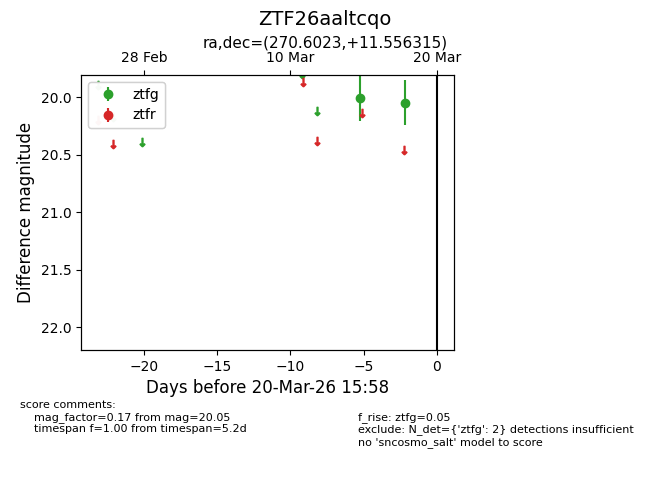
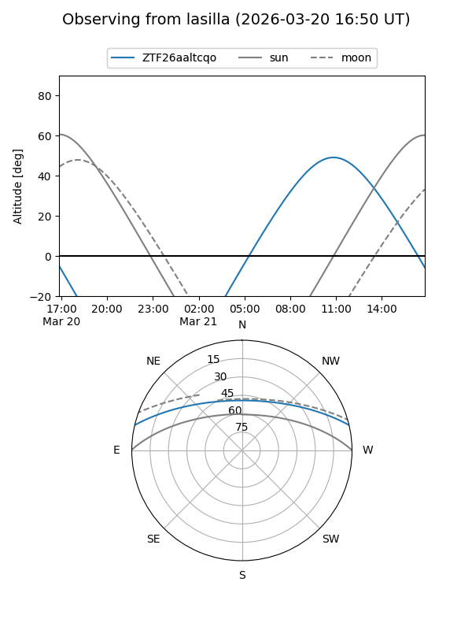
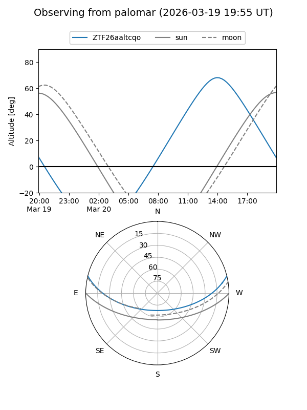

ZTF26aaltcqo
Target ZTF26aaltcqo at 2026-03-20 15:59
Aliases and brokers:
FINK: link
Lasair: link
ALeRCE: link
alt names
ZTF26aaltcqo (ztf,fink_ztf)
Coordinates:
equatorial (ra, dec) = 270.6023,+11.55631
equatorial (HMS+DMS) = 18:02:24.54,+11:33:22.73
galactic (l, b) = (37.9134,+16.04920)
Flags:
Photometry:
last ztfg=20.05
2 ztfg detections
Lightcurve

Visibility


Additional plots